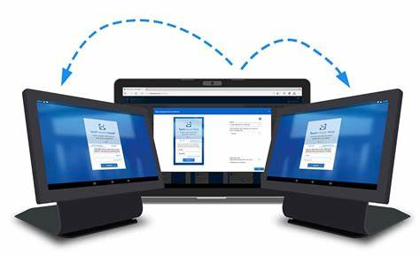
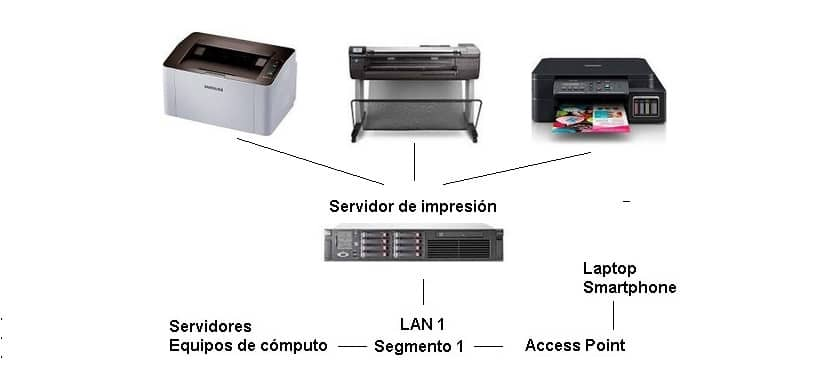
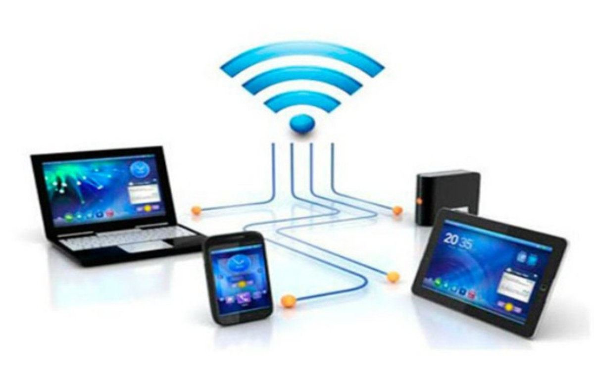

Servicios de una red
Podemos determinar los siguientes servicios:ACCESO A LA RED
Los servicios de acceso se encargan tanto de verificar la identidad del usuario, (para asegurar que sólo pueda acceder a los recursos para los que tiene permiso), como de permitir la conexión de usuarios a la red desde lugares remotos.
Lugares remotos; es generalmente, el enlace entre lugares remotos se realiza a través de la red pública de teléfono, pero una organización podría crear sus propios enlaces WAN mediante satélites, microondas u otras tecnologías de comunicación.
COMPARTIR ARCHIVOS
La posibilidad de compartir archivos es la prestación principal de las redes locales. La aplicación básica consiste en utilizar archivos de otros usuarios, sin necesidad de utilizar un pendrive, CD u otro medio de transporte de información. La ventaja fundamental es la de disponer de carpetas en la red a los cuales un grupo de usuarios tenga acceso.
IMPRESIÓN
Permite compartir impresoras entre varias computadoras de la red, lo cual evitará la necesidad de tener una impresora para cada equipo, con la consiguiente reducción en los costos. Las impresoras de red pueden ser conectadas a un servidor de impresión, que se encargará de gestionar la impresión de trabajos para los usuarios de la red, almacenando trabajos en espera (cola de impresión), asignando prioridades a los mismos, etc.
INFORMACIÓN
Los servidores de información pueden almacenar bases de datos para su consulta por los usuarios de la red u otro tipo de información.

ACCESO A INTERNET
Una de las prestaciones de Red que con el tiempo ha aumentado considerablemente su uso, es Internet. Internet a grandes rasgos permite la posibilidad de configurar una PC con una conexión permanente a servicios en línea externos, de forma tal que los usuarios de la Intranet no necesiten utilizar un modem personal para acceder a ellos.
Mediante un servidor de comunicaciones se puede mantener una línea permanente a alta velocidad que enlace la red local, Intranet, con Internet,
INTRANET: Una intranet es una red de ordenadores privados que utiliza tecnología Internet para compartir dentro de una organización parte de sus sistemas de información y sistemas operacionales.
NIC: Network Interface Card, es Un controlador de interfaz de red es un hardware componente que conecta un ordenador a una red informática. El controlador también puede ser denominado como un adaptador de red, o un adaptador de LAN.
El servidor puede estar equipado con una NIC , que activa la conexión cuando algún usuario de la red lo necesita. Cuando la conexión está activa, cualquier otro usuario puede compartirla, aunque en este caso las prestaciones de cada usuario serán menores que si tuvieran una conexión individual.
